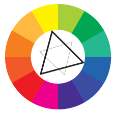

The ability to write down an idea or thought first begun in the 6th or 7th millennium BCE. These were very basic marks in stone, on tortoise shell or bone. The leap in technology was between 4000-2500 BCE when the Sumerians began to log the transfer of goods using clay tablets. These simple marks allowed for the transaction history to be saved and recalled later. Different cultures handled these proofs of payment differently. In England in the 13th century, they would notch a stick in increments of your payment. Then split the stick in two vertically through the notches. Then when you returned with your stick, you matched it with the one the tax collector had, therefore verifying your notches and preventing either party from cheating the other.
The running problem with these technologies is that they are “flat”. The information encoded on the stick or clay tablet is basically the same information we are encoding today, but now on paper. All of these mediums have a limitation of their physical size. On that clay tablet it is impossible to encode more information than there is space. Once you have notched all the way up and down the stick, there is no room to add more. The same limitation exists today with our paper sizes. We can shrink the font when we print, but there is still a maximum amount of information that can be squeezed onto the surface, no matter what the size paper or font used.
When we hit our physical limitation there are really two options. We could get more of the medium – paper is cheap, so instead of shrinking the font-size to fit more, we just print additional pages. But there might be some instances where you have restrictions on your physical medium. An example might be traveling into space. Every unit of mass that needs to be moved out of Earth’s gravitational pull has a cost. Less is better. Possibly during an examination, your professor allows you a single sheet of paper with anything you want written on it, front and back.
The other option is to change the way we are encoding the data. We moved from single tick marks being added-up to the more compact base 10 digits and the base 26+ alphabet, but the paper, the stick and the clay tablet are still two dimensional. You write on the surface, but you get very little effective use of the 3rd dimension. To get fully achieve a 3rd dimension you would have to change the medium, which isn’t possible. So what other alternatives are there?
The human ear hears in a log rhythmic scale. We are capable of hearing very faint noises while at the same time not having our heads explode by sounds orders of magnitudes louder. But the human ear also has a range of frequencies. All animals have ranges and not all ranges are the same. A dog’s hearing overlaps with humans. Dogs can hear us call for them in our auditory range, but they can also hear noises much higher pitched than human ears. If we could selectively hear different pitches then we could drop some “noise” and focus on one message, then selectively drop other “noise” to hear a different part of the message that is being broadcast on top of one another. But we’re talking about writing on a page, not sound in the air!
Light waves work in a similar manner as sound waves. The spectrum of light is much larger than our human eye can perceive. Dogs, insects and other creatures all have different optic cells sensitive to different wavelengths of light in their eyes. Radio waves are electromagnetic just like light waves. If we could see radio waves, the broadcast towers would appear to us like light bulbs.
Light waves are something that we can control with inks applied to two dimensional paper surfaces. We just need to devise away to limit the different wave lengths so we can remove the “noise” from the message.
Currently, when we look at a sheet of paper it is reflecting or absorbing the full spectrum of light, even Infrared and ultra violet rays. The immediate idea is to write a secret message in ink that can only be seen under certain lighting conditions. This would allow us to pack more information onto the area of a single page.
The challenge: Double Pack
Double the density of information per square unit on a piece of paper.
The difficulty is to do this requiring only the most minimum amount of equipment needed to read each encoding. Something like adding a UV light source would almost defeat the weight saved from printing multiple pieces of paper that double encoded the paper saves on space. Then you also have the problem of removing the visible light, the text you can normally see, when you want to only view the UV text. The same goes for the Infrared spectrum as well. It is best to limit our quest to only the visible spectrum, turning off and on colors as needed.
There actually is a very simple way to do this, photographs use these tricks all the time. When you are looking through the lens of your camera, you can cover up the end with a colored filter. This makes the world awash with that color. So, for example, if you put a red filter onto your camera lens, then the world around you looks all shades of red. This has turned off all the other visible light because they have all been blocked in the spectrum.
Do you remember in school when you used to mix paints together? When you mixed red and yellow you got orange and when you mixed red and blue you got purple. This is because there are three main primary colors, red, blue and yellow. And there are three secondary colors, orange, purple and green. The secondary colors are made from mixing two primary ones. When we draw this as a wheel, you can see how each primary color neighbor makes a secondary color inbetween. Now, if you look directly across the wheel you see the complimentary color. Every primary color’s compliment is a secondary color and vice-versa.
Paints and inks are additive. As you mix them together you get darker and darker. If you continue mixing all the colors you eventually end-up with black. Light, on the other hand, is subtractive. The more you add, the closer you get to white. If you want to learn more, find a book about color theory. The important thing to remember is that complimentary colors are opposite colors.
So back to our photographers with the red filters on their cameras. Everything they see is washed out in red. Now, if they add another filter onto their camera lens of the complimentary color, the two will cancel and they will be back to the image as normal. Photographers use this trick, not by putting two filters on their lens, but one filter on the lens and the second on their flash. Now, when the flash fires the people are basked in the complimentary color, which is negated by the filter. So now everything close to the camera looks normal and everything in the distance not covered by the flash is still red.
Let’s take a similar approach with our double encoded paper. We need to select two colors along with cheap dispensable filters. The perfect candidate is the red-blue filters from 3D glasses.
Now we have our colored filters which block some wavelengths while letting others through. Specifically the red wavelength and the blue, or more precisely cyan. The next step is to identify the closest matching wavelength. To do so, I have created a few color test sheets. They have small color chips of each shade from pure red to white and from pure cyan to white. A list of color test sheets are available at suda.co.uk/projects/color
These are important for two reasons, it isn’t simple enough to give the wavelength of the color in the glasses, you need to also know how that matches up with the type of ink in your specific home printer and the paper being used. For best results, print these test sheets on the printer that will be used to print the final double encoded paper.
Now you have your test sheets. Look at the red print-out and stare through the 3D glasses. It might help to close the blue eye so you are only seeing red. Look at the sheet of paper and find the first square of red that completely disappears into the background. This is the shade of red which best corresponds to the the wavelength of the red filter in the glasses. Repeat this step with the blue eye and find the hue which disappears completely.
Once you have completed that, you know the two values to use when printing. Next step is to write the document. Print half of it in the shade of red that disappears. Then feed the same paper through again, printing the second half right on top of the first, this time in the blue shade.
Without the glasses it will just look like a jumbled mess on paper, quite unreadable. But when you put the glasses on, by closing one eye or the other, you can read the paper just fine. In doing so, you can encode twice as much information onto a single sheet than before.
Another precaution you take to help readability is to offset the printed lines slightly. If the lines are not printed directly on top of one another, then it is less likely to over-write the first text with ink from the second. One of the simplest ways to prevent this, is to print the second encoding upside-down. This also helps if there is any color “bleed”, having the upside-down makes it illegible and your brain won’t waste time interpreting faint recognizable patterns. Ultimately, there will be some trial and error in printing based on the application you are using to write the text.
Next time someone limits you to the use of only 1 sheet of paper, you know how you can double your returns.